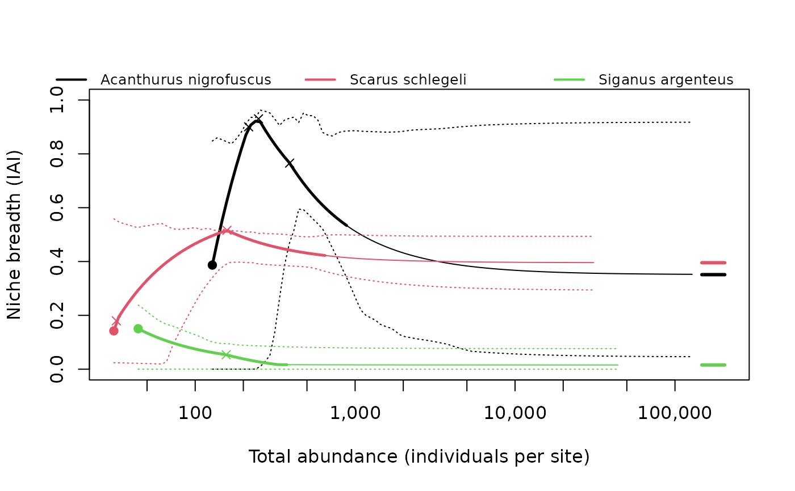
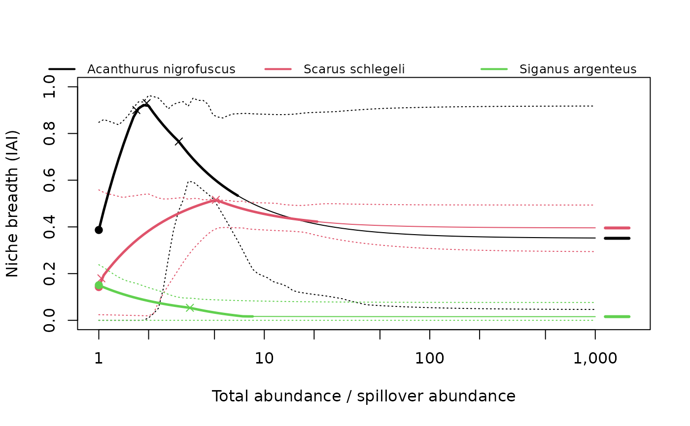

Computes the isodar-adjusted inequality along a range of total abundances for each species, with optional bootstrap bands, and the points needed to plot it: the density-independent value at each species' spillover abundance, the asymptote, preference reversals and the totals at which the curves of two species cross.
Usage
iai_curve(
fit,
totals = NULL,
n_boot = 0,
conf_level = 0.95,
weights = "1/var",
scaled = TRUE,
min_occupancy = 1,
seed = NULL,
max_search = 10000
)Arguments
- fit
Output of
niche_breadth()(whose settings are reused), the long-format output offit_isodars(), or a single fit fromfit_isodars()(no bootstrap).- totals
Optional numeric vector of total abundances.
- n_boot
Number of bootstrap replicates for the bands (0 for none).
- conf_level
Confidence level of the bands.
- weights, scaled, min_occupancy, max_search
As in
niche_breadth(); ignored whenfitis aniche_breadthresult.- seed
Optional random-number seed.
Value
A tibble of class iai_curve with species (if given),
total_abundance, relative_abundance (total / \(T_0\)),
niche_breadth, and lower and upper (bootstrap band; NA without
bootstrap). Attributes: "points" (per species: spillover_abundance,
nb_di, nb_dd at the asymptote, and max_observed, the largest
site total in the data), "reversals" (preference reversals
within the range) and "crossings" (species_1, species_2,
total_abundance, niche_breadth).
Details
By default each species' curve runs from its spillover abundance
\(T_0\) to \(1000 T_0\) (see niche_breadth()), usually far beyond
the abundances observed; the plot draws the part beyond the largest
observed site total as a thinner line. totals sets a common range
instead; totals below a species' \(T_0\) are allowed (some used habitat
then holds less than one individual), so curves, reversals and crossings
can lie below \(T_0\). Totals are in individuals per reference effort
(see fit_isodars()).
The bands are pointwise percentile intervals at each fixed total. They
differ from the intervals of nb_di in niche_breadth(), where the
spillover abundance is re-estimated in every bootstrap replicate; report
those for density-independent niche breadth.
Where the curves of two species cross, their ranking by niche breadth
depends on the abundance at which they are compared. These rank reversals
are returned in attribute "crossings", using the totals where both curves
are defined.
Examples
three <- moorea_fish[moorea_fish$species %in% c("Acanthurus nigrofuscus",
"Scarus schlegeli", "Siganus argenteus"), ]
fits <- fit_isodars(three, species = "species", site = "site",
habitat = "habitat", abundance = "abundance", dim = "ndim")
curve <- iai_curve(fits, n_boot = 50, seed = 1)
plot(curve)

plot(curve, x_axis = "relative")

attr(curve, "crossings")
#> # A tibble: 2 × 4
#> species_1 species_2 total_abundance niche_breadth
#> <chr> <chr> <dbl> <dbl>
#> 1 Acanthurus nigrofuscus Scarus schlegeli 141. 0.506
#> 2 Acanthurus nigrofuscus Scarus schlegeli 3283. 0.400